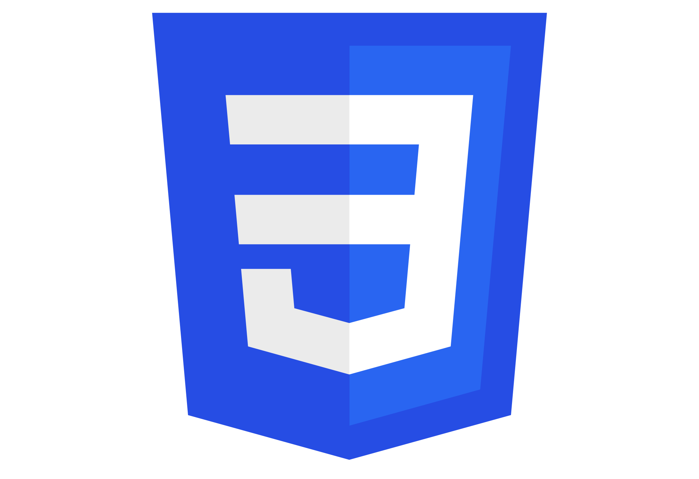
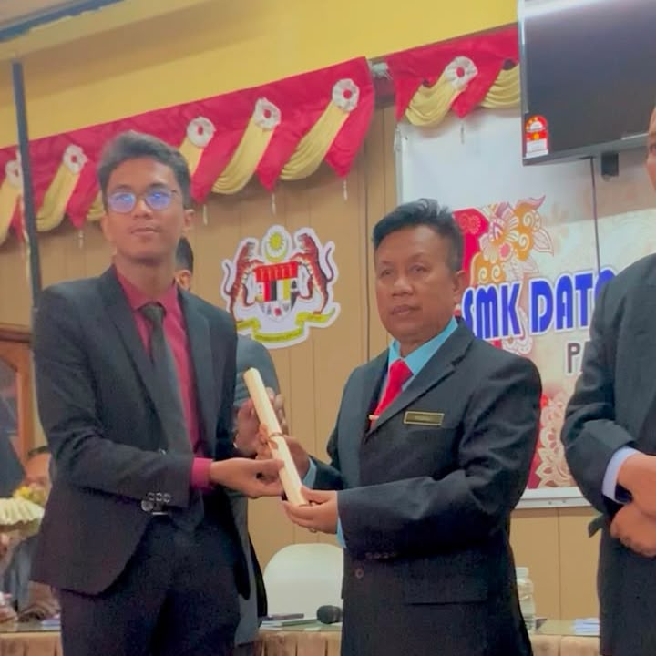
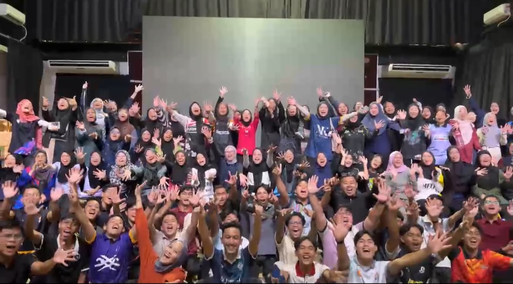

Technical Skills
 HTML5
HTML5

CSS3JavaScript
 Microsoft Office
Microsoft Office
Professional Skills
Technical and soft skills developed through academic studies and projects.
 HTML5
HTML5

CSS3JavaScript
 Microsoft Office
Microsoft Office

Assigned as MPP Multimedia Exco Leader of Form 6 and responsible for assisting organizational planning, communication and student activities.
Developed leadership, teamwork and event management skills through collaboration with committee members.

Participated in learning to organizing academic and student programmes within university activities.
Assisted in planning teamwork activities in Leadership Module.
| Skill Area | Evidence | Workplace Value |
|---|---|---|
| Web Design | Built multi-page e-resume website | Can organize digital content clearly |
| Documentation | Prepared structured academic assignments | Can present information professionally |
| Communication | Presented ideas in class and group work | Can collaborate with different people |